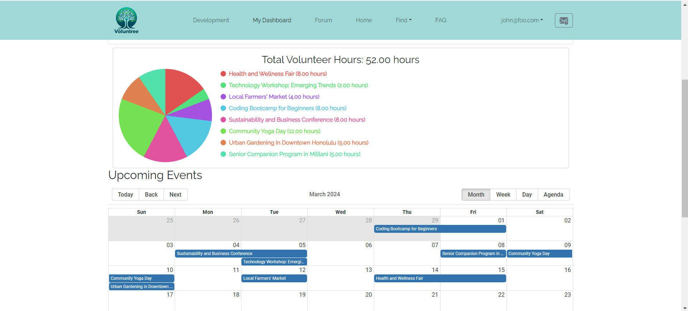
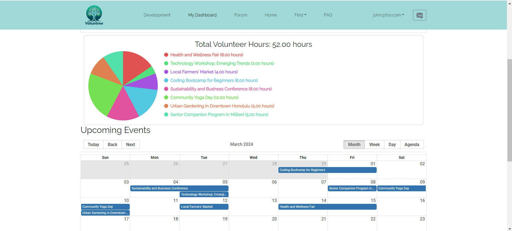

A Site to Remember
07 May 2024
Overview
Many volunteers often want to help more in their communities but can’t find suitable opportunities or struggle with receiving responses after applying. This semester, I was fortunate to be part of a project aimed at addressing these issues. Our team developed a web application, Voluntree, designed to facilitate the process of finding and engaging in volunteer opportunities. This project enhanced my technical skills and also offered valuable insights into team collaboration and project management.
My Contributions
As part of the Voluntree project team, I mainly contributed to the front-end development. My responsibilities included:
- Design and functionality of the Volunteer Opportunities Page: I was tasked with creating a user-friendly interface that allows volunteers to easily browse and apply for opportunities.
- UI for Adding Nonprofit Organizations: I developed the interface that enables nonprofit organizations to join the platform and post their volunteer needs.
- Footer Design: I crafted a responsive and informative footer for the website, enhancing the overall aesthetic and usability.
- Test Integration: I implemented various tests to ensure that new features functioned correctly and did not break existing functionality. These contributions were crucial in making Voluntree a platform that meets the needs of both volunteers and organizations.
 

Main Takeaways
The project solidified several important skills, notably in team collaboration and project management. Despite challenges such as misaligned schedules and the absence of two team members, we managed to maintain progress and meet our objectives. It was also a struggle getting each member to review our files each week, which highlighted the critical role of communication in successful teamwork. By enhancing our communication strategies and regularly aligning on expectations and goals, we overcame these challenges. This experience taught me the significance of flexibility and open communication in overcoming obstacles and ensuring project continuity. Working on this project also allowed me to enhance my technical expertise, especially in JavaScript. For instance, I got to learn how to integrate a pie chart linked to dynamic data. This not only strengthened my programming skills but also deepened my understanding of data visualization techniques.
Conclusion
Reflecting on my experience in ICS 414, I am immensely proud of what we achieved with Voluntree. This semester was not just about developing a web application; it was about creating a tool that could genuinely make a difference in the community. The technical skills and teamwork strategies I’ve developed will undoubtedly serve me well in my future endeavors in the field of information and computer sciences.